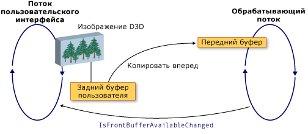

Взаимодействие WPF и Direct3D9
Можно включить содержимого Direct3D9 в приложении Windows Presentation Foundation (WPF). В этом разделе описывается создание содержимого Direct3D9 таким образом, чтобы эффективно взаимодействовать с WPF.
Note
При использовании содержимого Direct3D9 в WPF, необходимо также подумать о производительности. Дополнительные сведения о том, как оптимизировать производительность, см. в разделе рекомендации по ускорению взаимодействием Direct3D9 и WPF.
Буферы отображения
D3DImage Класс управляет двумя буферами отображения, которые называются задний буфер и передний буфер. Задний буфер — это область Direct3D9. Изменения на задний буфер копируются передний буфер при вызове Unlock метод.
Ниже показана связь между задний буфер и передний буфер.

Создание устройства Direct3D9
Для отображения содержимого Direct3D9, необходимо создать устройство Direct3D9. Имеется два объекта Direct3D9, которые можно использовать для создания устройства, IDirect3D9 и IDirect3D9Ex. Эти объекты можно использовать для создания IDirect3DDevice9 и IDirect3DDevice9Ex устройств, соответственно.
Создание устройства путем вызова одного из следующих методов.
IDirect3D9 * Direct3DCreate9(UINT SDKVersion);HRESULT Direct3DCreate9Ex(UINT SDKVersion, IDirect3D9Ex **ppD3D);
В Windows Vista или более поздней версии операционной системы, используйте Direct3DCreate9Ex метод с отображением, который настроен для использования Windows отображения Driver Model (WDDM). Используйте Direct3DCreate9 метод на любой другой платформы.
Доступность метода Direct3DCreate9Ex
Имеет d3d9.dll Direct3DCreate9Ex метод только в Windows Vista или более поздней версии операционной системы. При прямой ссылке на эту функцию в Windows XP, приложение не удается загрузить. Чтобы определить, является ли Direct3DCreate9Ex метод поддерживается, загрузить библиотеку DLL и найдите адрес процедуры. Ниже показано, как проверить Direct3DCreate9Ex метод. Полный пример кода, см. в разделе Пошаговое руководство: Создание содержимого Direct3D9 для размещения в WPF.
Warning
It looks like the sample you are looking for does not exist.
Создание HWND
Для создания устройства требуется HWND. Как правило вы создадите фиктивный HWND для использования Direct3D9. В следующем примере кода показано, как создать вспомогательный HWND.
Warning
It looks like the sample you are looking for does not exist.
Представление параметров
Для создания устройства также требуется D3DPRESENT_PARAMETERS структуры, но только некоторые параметры являются важными. Эти параметры выбраны, чтобы свести к минимуму объем памяти.
Задайте BackBufferHeight и BackBufferWidth поля 1. Задавая для них значение 0 приводит к их будет присвоено размеры HWND.
Всегда значение D3DCREATE_MULTITHREADED и D3DCREATE_FPU_PRESERVE флаги, чтобы предотвратить повреждение памяти, используемой Direct3D9 и чтобы предотвратить изменение параметров FPU Direct3D9.
Ниже показано, как инициализировать D3DPRESENT_PARAMETERS структуры.
Warning
It looks like the sample you are looking for does not exist.
Создание целевого объекта отрисовки заднего буфера
Для отображения содержимого Direct3D9 в D3DImage, можно создать поверхность Direct3D9 и назначить его путем вызова SetBackBuffer метод.
Проверка поддержки адаптера
Прежде чем создавать рабочую область, убедитесь, что все адаптеры поддерживает свойства поверхности. Даже если при подготовке к просмотру только один адаптер, окно WPF могут отображаться на одном адаптере в системе. Следует всегда писать код Direct3D9, который обрабатывает конфигурацию с несколькими адаптерами и следует проверить все адаптеры для поддержки, так как WPF может перемещать поверхность среди доступных адаптеров.
В следующем примере кода показано, как проверить, поддерживают все адаптеры для Direct3D9 в системе.
Warning
It looks like the sample you are looking for does not exist.
Создание рабочей области
Прежде чем создавать рабочую область, убедитесь, что возможности устройства поддерживает высокую производительность в целевой операционной системе. Дополнительные сведения см. в разделе рекомендации по ускорению взаимодействием Direct3D9 и WPF.
После проверки возможности устройства, можно создать области. В следующем примере кода показано, как создать мишень рендеринга.
Warning
It looks like the sample you are looking for does not exist.
WDDM
В Windows Vista и более поздних операционных системах, которые настроены на использование модели WDDM, можно создать текстуру целевой объект отрисовки и передать в область уровня 0, чтобы SetBackBuffer метод. Этот подход не рекомендуется в операционной системе Windows XP, поскольку не удается создать текстуру целевого блокируемый отрисовки и производительность будет снижена.
Обработка состояния устройства
D3DImage Класс управляет двумя буферами отображения, которые называются задний буфер и передний буфер. Задний буфер — это область Direct3D. Изменения на задний буфер копируются передний буфер при вызове Unlock метода, в котором они отображаются на оборудовании. В некоторых случаях передний буфер становится недоступной. Отсутствие доступности может быть вызвано блокировки экрана, весь экран эксклюзивные приложения Direct3D, переключения пользователей или другие системные события. В этом случае приложение WPF уведомляется путем обработки IsFrontBufferAvailableChanged событий. Как приложение реагирует на передний буфер, недоступности зависит от того, включен ли WPF на переключение на программную отрисовку. SetBackBuffer Метод имеет перегрузку, которая принимает параметр, который указывает, возвращается ли WPF к программной отрисовке.
При вызове SetBackBuffer(D3DResourceType, IntPtr) перегружать или вызвать SetBackBuffer(D3DResourceType, IntPtr, Boolean) перегрузка с enableSoftwareFallback параметру присвоить false, система отрисовки освобождает ссылку на задний буфер, если передний буфер становится недоступной, и ничего не отображается. Когда передний буфер снова станет доступным, система отрисовки вызывает IsFrontBufferAvailableChanged событие для уведомления приложения WPF. Можно создать обработчик событий для IsFrontBufferAvailableChanged событие, чтобы перезапустить отрисовки с допустимым поверхность Direct3D. Чтобы перезапустить подготовки отчетов, необходимо вызвать SetBackBuffer.
При вызове SetBackBuffer(D3DResourceType, IntPtr, Boolean) перегрузка с enableSoftwareFallback параметру присвоить true, система отрисовки сохраняет ссылку на задний буфер, если передний буфер становится недоступным, поэтому нет необходимости вызывать SetBackBuffer при переднего плана буфер снова станет доступным.
При включенной программного обеспечения отрисовки, могут возникнуть ситуации, на устройстве пользователя становится недоступной, когда система отрисовки сохраняет ссылку на поверхность Direct3D. Чтобы проверить, является ли устройство Direct3D9 недоступен, вызовите TestCooperativeLevel метод. Чтобы проверить вызов Direct3D9Ex устройств CheckDeviceState метод, так как TestCooperativeLevel метод является устаревшим и всегда завершается успешно. Если устройство пользователя стала недоступной, вызовите SetBackBuffer для освобождения WPF ссылку на задний буфер. Если вам потребуется выполнить сброс устройства, вызвать SetBackBuffer с backBuffer параметру присвоить nullи затем вызвать SetBackBuffer с backBuffer присвоено допустимое поверхность Direct3D.
Вызовите Reset способ устранения неработающего устройства только в том случае, если реализована поддержка нескольких адаптеров. В противном случае — освобождает все интерфейсы Direct3D9 и заново создайте их полностью. Если разметка адаптера был изменен, Direct3D9 объекты, созданные до изменения не обновляются.
Обработка изменения размера
Если D3DImage отображается с разрешением, отличный от исходного размера, оно масштабируется в соответствии с текущим BitmapScalingMode, за исключением того, что Bilinear заменяется Fant.
Если требуется более высокая точность, необходимо создать новую поверхность, когда контейнер D3DImage изменяется размер.
Существует три способа обработки изменения размера.
Участвовать в системе макета и создайте новую поверхность, при изменении размера. Не создавайте слишком много рабочих областей, так как можно израсходовать или фрагментировать память.
Подождите, пока событие изменения размера не произошло за фиксированный период времени для создания новой рабочей области.
Создание DispatcherTimer , проверять размеры контейнера несколько раз в секунду.
Оптимизация конфигураций с несколькими мониторами
Значительное снижение производительности может произойти при перемещении система отрисовки D3DImage на другой монитор.
В WDDM пока мониторы находятся на том же видео карте и используется Direct3DCreate9Ex, имеется без снижения производительности. Если мониторы используют разные видео карты, производительность снижается. В Windows XP производительность снижается всегда.
Когда D3DImage перемещается на другой монитор, можно создать новую поверхность на соответствующий адаптер, чтобы восстановить хорошую производительность.
Чтобы избежать снижения производительности, напишите код, специально для случая нескольких мониторов. Ниже показан один способ написания кода для нескольких мониторов.
Найти точку D3DImage в пространстве экрана с
Visual.ProjectToScreenметод.Используйте
MonitorFromPointGDI-способ найти монитор, отображающий эту точку.Используйте
IDirect3D9::GetAdapterMonitorметод, чтобы найти адаптер Direct3D9 монитор включен.Если адаптер не так же, как адаптер с задним буфером, создайте новый задний буфер для нового монитора и назначьте его D3DImage задний буфер.
Note
Если D3DImage распределяется между несколькими мониторами, производительность будет снижена, за исключением использования WDDM и IDirect3D9Ex в одном адаптере. Нет способа для повышения производительности в этой ситуации.
В следующем примере кода показано, как найти текущего монитора.
Warning
It looks like the sample you are looking for does not exist.
Обновление монитора при D3DImage изменения размера или положения контейнера или обновите монитор с помощью DispatcherTimer , обновляет несколько раз в секунду.
WPF программной отрисовки
WPF выполняет визуализацию синхронно в потоке пользовательского интерфейса в программном обеспечении в следующих ситуациях.
Печать
При возникновении такой ситуации система отрисовки вызывает CopyBackBuffer метод копирования в буфер оборудования к программному обеспечению. По умолчанию реализация вызывает GetRenderTargetData метод с вашей рабочей областью. Так как этот вызов происходит вне шаблона блокирования и разблокирования, он может завершиться ошибкой. В этом случае CopyBackBuffer возвращает метод null и изображение не отображается.
Можно переопределить CopyBackBuffer метода, вызвать базовую реализацию, и если он возвращает null, можно вернуть заполнитель BitmapSource.
Вы также можете реализовать собственные программную отрисовку вместо того чтобы вызывать базовую реализацию.
Note
Если WPF выполняет отрисовку полностью в программном обеспечении, D3DImage не указывается, так как WPF нет передний буфер.